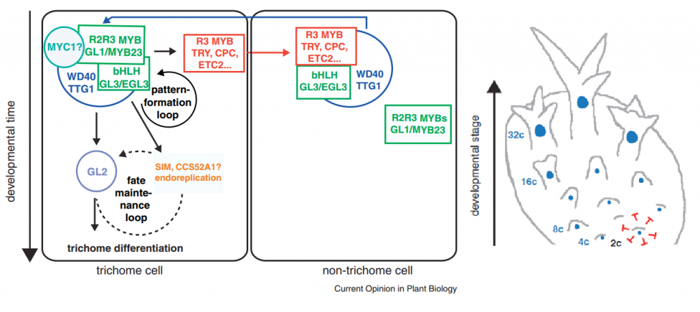
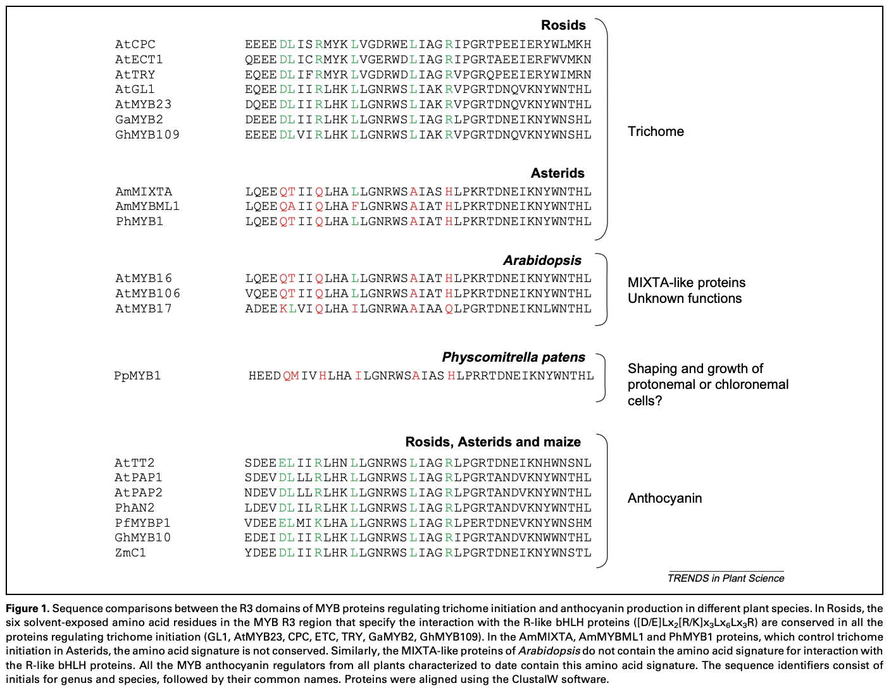

Much is known about the genes that control trichome formation/development in Arabidopsis [Pattanaik et al., 2013]. At least 3 genes are required for normal trichome development. Plants without one of these genes simply don’t make trichomes. It’s a bit more complicated than I’m making it sound, but the plant needs glabrous-1 (GL1), glabrous-3 (GL3), and transparent-testa-glabra-1 (TTG1). The students at Georgia Tech made a nice graphic to show this on their very informative page about trichome development. I’ve reproduced it here:
Altogether, at least 70 genes are now known to play some role in influencing trichome development [Fambrini et al., 2019]. A key step is altering the cell's mitotic machinery to produce cells that have 16x the normal number of chromosomes per cell). This process is known as endoreduplication.
In some cases, homologous genes may play similar roles in trichome initiation in other plant groups. Each of these genes has related genes in other plants [Doroshkov et al., 2019]. However, finding the important regulators of trichome development and patterning in other groups, such as the grasses, is probably not as simple as identifying the most closely relate gene to each of the trichome-controlling genes in Arabidopsis.
For example, the Arabidopsis gene GL1 is a R2R3 MYB transcription factor. It plays a critical role in trichome formation and it is likely that closely related genes have a similar role in all plants. However, in Arabidopsis, it forms a MYB–bHLH–WDR complex (the MBW complex) with two other types of transcription factors, basic helix-loop-helix (bHLH) and WD-repeat (WDR) proteins. This complex may not be conserved, evolutionarily, or at least, not beyond the rosids. It is true that, in cotton, another rosid, a similar complex may determine the fate of trichomes (cotton fibers). However, in asterids such as snapdragon, tobacco and petunia, the MYB gene analogous to the Arabidopsis gene GL1 doesn't bind to bHLH genes in the way that GL1 bound to GL3/EGL3 in Arabidopsis, so there is probably no MBW complex formed. Also the WDR proteins in petunia and maize are not involved in trichome formation [Serna, et al. 2006]. Even the role of the MYB gene in trichome formation may not be homologous across all plants, as the MYB genes utilzed by rosids are not closely related to those of monocots [Zhang et al., 2019].
Also, the way in which even spacing of trichomes across the leaf surface is achieved is that each trichome-producing cell prevents neighboring cells from forming trichomes depends on the competetive disruption of the MBW complex, so that is not likely to be conserved, either [Doroshkov et al., 2019].
Much of the regulatory network in Arabidopsis thus appears to be a recent innovation. Other groups, such as grasses, probably have regulatory networks that are rather different [Serna, et al. 2006].
Just to be sure, I decide to look for myself and see if I could confirm Serna et al.'s finding in grass genome, for which many recently-sequenced genomes are now available. (try BLASTing At GL1 - use blastp?)
The most direct evidence of the MBW complex comes from maize. "Four solvent-exposed amino acid residues (Lx2Rx2[R/K]L) in the first helix of the R3 MYB repeat of R2R3 MYB protein COLOURLESS1 (C1) provide a surface for interaction with the basic-helix–loop–helix (bHLH) RED (R) protein in maize [9]. Such residues are both necessary and sufficient to confer the ability to interact with R and to induce transcription from specific promoters [9]. Both C1 and R control anthocyanin production in maize [10]. More recently, the identification of a related amino acid signature in a subset of Arabidopsis MYB proteins ([D/E]Lx2[R/K]x3Lx6Lx3R) that interacts with R-like bHLH proteins [11] (Figure 1) indicates that such an interaction domain is conserved among higher plant species." [Serna, et al. 2006]
Even if the genetic regulation of trichome growth and morphology varies among plant groups, it is still possible that the patterning and density may be more conserved.
“Trichome patterning in A. thaliana involves also seven redundantly acting inhibitor genes including AtTRY, AtCPC, AtETC1, AtETC2, AtETC3, AtTCL1, and AtTCL2.” [Chopra, et al., 2019]
These same genes are involved in patterning the glandular trichomes in tomato and wormwood.